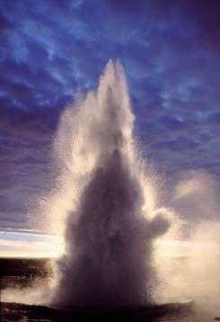
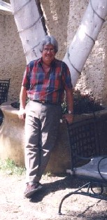

Dilema

Autor: D.R. Rafael Paredes Balderrama. (México)
"Creemos
saber quiénes somos y para qué estamos aquí; pero no está a nuestro alcance comprender el maravilloso misterio de la vida..." |
¡Nuevo!
 ULTIMO PASEO MATUTINO
ULTIMO PASEO MATUTINO
Hace unos tres días salía caminando por los jardines de la escuela donde trabajo. El sendero, tiene un paso de adoquines y a ambos lados hay pinos bastante altos y bellos. Hacia mi mano derecha justo al poniente, hay un gran jardín con pasto esmeralda, poco antes de llegar a la entrada de un salón de clase y del otro lado un edificio con aulas. Allí, tengo las mesas de la cafetería a mi derecha, que está pleno de juventudes toman refrescos y comen cosas chatarras, como es lo normal en ellos. Casi todos, están vestidos con pantalones jens, más que pegados a sus muslos y caderas, sus camisas coloridas y las blusas, otros con sus chamarras o suéteres, principalmente las jovencitas delgadas, pero delgadas en serio; en fin, el colorido es muy diverso. También, fuman bastante , pero más que nada sonríen y gritan, escuchan música, y otros a unos pasos de las mesitas se sientan alrededor de la fuente. Sí, hay una fuente redonda, su pedestal al centro y otro círculo a cierta altura, el agua en la punta sale constantemente y se ve muy linda, de hecho en las mañanas a eso de las 7.15 , cuando llego, la encienden junto con otras tres fuentes más que existen entre los edificios en jardines pequeños.
Cada mañana me siento en una silla de las mesitas, claro antes la limpio, ya que están bajo una estructura bastante amplia y el techo es de láminas de metal. En fin, sentado contemplo el agua de la fuente y el jardín por casi 45 minutos; escucho el murmullo del agua relajante, que se deja caer en las dos partes de la fuente. Son momentos bellísimos y los disfruto al máximo. Principalmente ahora, que estoy escribiendo en una de las mesitas estas letras; es muy especial el momento porque es el último día de clase. Los chicos han terminado un semestre más; el lunes entrante inician sus exámenes ordinarios y estarán listos para ir de vacaciones. Asimismo iniciarán al regreso un semestre nuevo y han avanzado hacia su meta personal. Estoy feliz, el asunto que me tiene emocionado esto es que, no imaginan el gran cariño que les tengo, son como mis nietos y uno que otro como un hij@, en fin, les quiero mucho y los veo progresar y eso me hace ser parte de ellos y ellos de mi vida…por esto es que les comparto estos bellos momentos.
Estas cosas tan simples que contemplo hacen de mi vida algo espectacular.
Reciban un abrazo fraterno.
Rafael Paredes Balderrama Árcolo. Junio 2010
|
 |
Anterior
El verdadero silencio
Vino originalmente como todo, creado en lo profundo
de una cuna celestial azul.
Símbolo de la vida misma.
Su propia intemporalidad pertenece a la fuente eterna de la creación.
Es necesario que comprendamos el profundo significado, de poder escuchar nuestro
interior en el silencio máximo.
En él, aprender a observar y analizar las almas del mundo exterior, para
concebirlo desde dentro de sí.
De esta manera clarificamos, poco a poco, nuestra creación y recreación
de la verdad interior.
Nuestro Silencio es aquí, ahora y siempre, para arribar a las playas de la reflexión.
Penetrar en los dominios de nuestra conciencia,
génesis del universo interior, imperio de la mente divina, generadora
del bien constante de manera ascendente y eterna.
Resurgir de la verdad de nuestro profundo silencio rehaciendo nuestra realidad,
para esparcir infatigablemente bendiciones y vibraciones de amor universal,
paz, espiritualidad y armonía.
Las manifestaciones renovadas en lo profundo, ahora
constituyen un trabajo real, efectivo, necesario y precioso para cooperar a
la superación del mundo.
Aprendamos entonces a desear que nos suceda todo aquello, conveniente y bueno
para el alma y, no lo superficialmente agradable.
Si deseamos conocer a la gente, guardemos silencio, tomando su lugar para observar su verdadero pensamiento.
Si deseamos conocernos a nosotros mismos, escuchemos
razonadamente nuestros diálogos interiores, evaluémoslos para
pensar, sentir, expresar y actuar congruentemente con ellos.
Si deseamos conocer nuestra alma y capacidad de amor, guardemos un total y profundo
silencio.
Este es el estadio de la felicidad del alma, donde todo se da y nada se requiere.
La libertad y la felicidad van de la mano en este perfecto silencio.
Camino que plantea el reto de detenerse ante el miedo o de avanzar hacia la
iluminada divinidad.
El silencio siempre ha estado, es intemporal y representa la inmortalidad de
la mentalidad divina, recreándola en nuestra verdad, cada vez que entramos
en él.
Gracias, no por su tiempo, sino por su invaluable existencia.
Arcolo